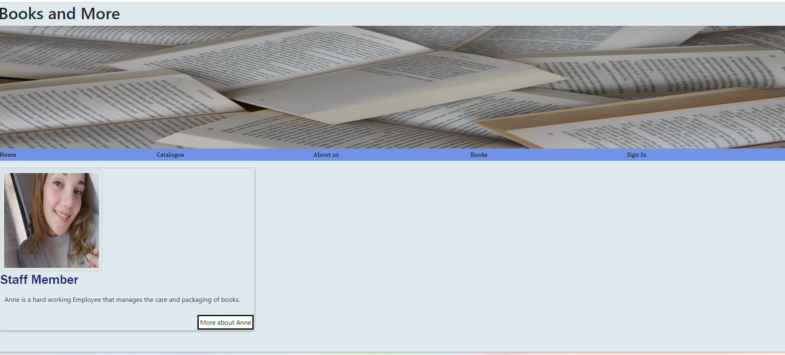
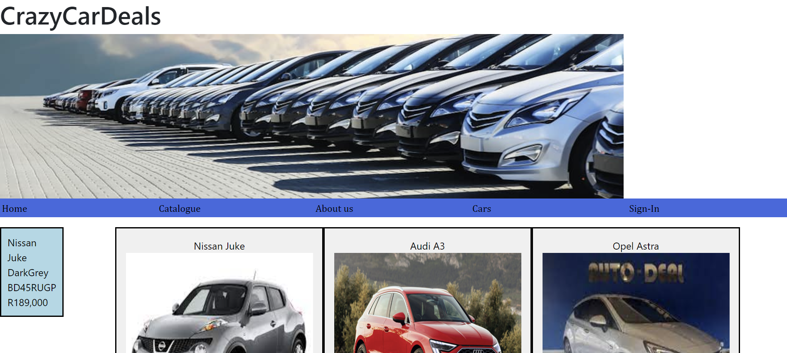
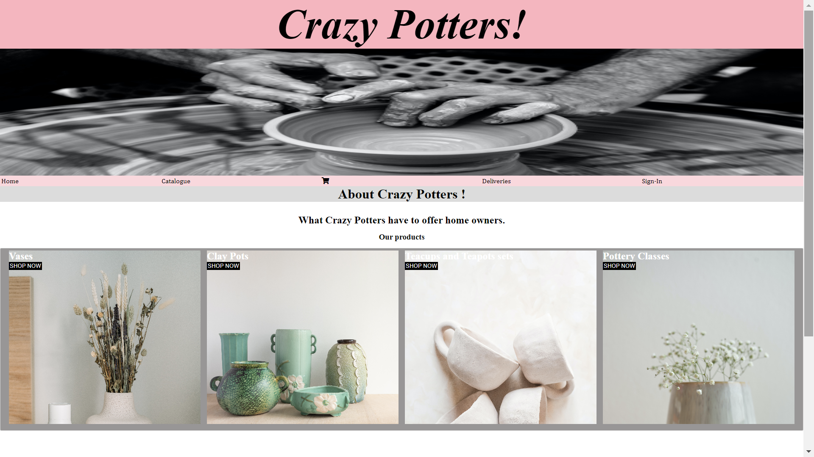

Project Overview
Books and More is a website that provides a range of functions with CSS and
HTML as well as Bootstrap. This project shows of all the things one can
with just CSS and Bootstrap in the beginning of Web development.
My role as the web developer was to design the website and to ensure that
it was functional and suitable for the needs of a client. I planned the design before
the coding took place to match the needs of the task that was given to us.

Project Overview
Crazy Car deals was a website that tested our
JavaScript skills, the basic HTML and CSS is there but the car displays was made possible by
JavaScript and the onclick function that allows you to view more details on the cars.
My role as the web developer in this task was to get the cars to show without the use
of CSS and Bootstrap, as that would have been a more length route to take. JavaScript
allows us to do more by writing less code.

Project Overview
Crazy Potters is a fully functional website that shows off
the skills of JQuery, CSS and HTML. The task that was given to us was to ensure that it was a website
that users can use to place delivers and show the total amout with tax and different deliver fees.
The role as a web developer in this task was to design, code and test that everything worked, I had
to ensure that everything ran smoothly as well as make it appealing to customers to use.